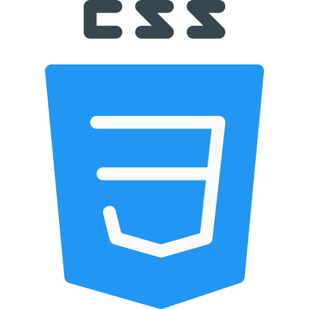

Tecnologias



Podemos classificar como a parte visual de um site, aquilo que conseguimos interagir. Quem trabalha com Front End é responsável por desenvolver por meio do código uma interface gráfica e, normalmente, com as tecnologias base da Web: HTML, CSS e JavaScript. Algumas pessoas podem confundir um pouco esse trabalho com o que um designer faz, pois no passado existia uma entidade chamada Webmaster que fazia tudo isso e mais um pouco, mas a diferença aqui é que o designer vai utilizar alguma ferramenta visual para desenhar a interface, do Photoshop ao Sketch e, quem faz Front-End, estará mais próxima do código em si, que irá rodar num navegador Web como o Chrome, Firefox ou Safari.
Como o próprio nome sugere, vem da ideia daquilo que tem por trás de uma aplicação. Pode ficar meio abstrato num primeiro momento, mas pense que para conseguir usar o Facebook no dia a dia, os dados (as informações) do seu perfil, amigos e publicações precisam estar salvos em algum lugar e serem processados a partir dele, sendo este lugar um banco de dados. O Back-End trabalha em boa parte dos casos fazendo a ponte entre os dados que vem do navegador rumo ao banco de dados e vice-versa, sempre aplicando as devidas regras de negócio, validações e garantias num ambiente restrito ao usuário final (ou seja, onde ele não consegue acessar ou manipular algo).